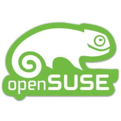

Creative Commons /
Tor Project [[[Protect your anonymity]]] /
AirVPN /
The Pirate Bay /
WikiLeaks /
Playlists >
[YT]
[S]
[SC]


~> Chris McGimp8ey-Jones
OS:  OpenSUSE (Tumbleweed)
Allegiance: Tomorrow's Hackers
Political affiliation: Neo-Crypto Anarchist
Religious affiliation: Buddhism 卍 / Buddhist Technologist Alliance
Philosophy: Pacifism
ABN: 98 317 740 240
Linux 20+ years
- Applied Digital Skills (Sponsored by Google)

- Certificate Level 1 (HPSA1NA) - NETWORK ADMINISTRATION
- Certificate Level 2 (HPSA2EN) - ENGINEER
- Certificate Level 3 (HPSA3AR) - ARCHITECT
- Certificate Level 4 (HPSA4MA) - MASTER


Q-CHAN Administrator > https://www.qanonsec.com/chan
2 x 8kun Board Owner > /rr5 / /qresearch2gen
Creator of 4chan and 8kun Android apps:
Creator of GitHub and GitLab Android apps:
Creator of news suite of Android apps:
Unixmen alumnus :: Pirate Party alumnus :: Australian Republic Movement member
Freedom Publishers Union Co-Founder :: Cicada 3301 (AU) custodian
(Professional) Member - International Association of Professional Writers & Editors
2 x 8kun Board Owner > /rr5 / /qresearch2gen
Creator of 4chan and 8kun Android apps:
Creator of GitHub and GitLab Android apps:
Creator of news suite of Android apps:
Unixmen alumnus :: Pirate Party alumnus :: Australian Republic Movement member
Freedom Publishers Union Co-Founder :: Cicada 3301 (AU) custodian
(Professional) Member - International Association of Professional Writers & Editors
Portfolio
I hold ownership of multiple business titles which are registered in Australia and have an established global presence.
I am the custodian of Cicada 3301 in Australia through ownership of the trademark and business titles which are registered
in Australia, and the .com.au and .au domain names.
I was appointed Director of Cicada 3301 AU on January 21, 2023.
I am the Administrator of Freedom Publishers Union.
I am the custodian of Cicada 3301 in Australia through ownership of the trademark and business titles which are registered
in Australia, and the .com.au and .au domain names.
- "Cicada 3301" Trademark
- AU PH Cicada 3301
- Cicada 3301
- Cicada 3301 Token
- cicada3301.com.au
- cicada3301.au
I was appointed Director of Cicada 3301 AU on January 21, 2023.
I am the Administrator of Freedom Publishers Union.
Introductory statement
I am the Co-Founder of the online publication, Freedom Publishers Union, which was established late 2012.
I am a Linux technologist, web entrepreneur and publisher, with a background in photographic imaging and graphic design.
I work from my home office on the Gold Coast, in Queensland State, Australia, where I remain deeply involved with the
FOSS and Linux community.
As an anarchist with no formal political affiliation, I advocate for free speech absolutism, anti-censorship, open information
and digital rights.
I call for the disassembling of the structures of capitalism which have proven wealth distribution is a miserable failure and
ensures greed prevails.
I have a deeply rooted interest in encryption and information security, regularly advocating the benefits of how the personal
use of encryption can reduce the harm incurred by the machinations of government mass-surveillance.
I am a previous party member of the Pirate Party of Australia.
Following my departure from the Pirate Party and still enthusiastic about the pirate party movement, I went on to establish
a sub-party called Democratic Pirates Australia.
In the second half of 2017, Democratic Pirates Australia was dissolved and its digital assets were merged with Freedom
Publishers Union.
I am a public advocate for Creative Commons and the Tor Project, and a Tor operator.
In January 2023, I was appointed Director of Cicada 3301 Australia.
In October 2023, I become a member of the Australian Republic Movement.
I actively promote Buddhism and cite the philosophies of Zen Buddhism for having a major positive impact on my life.

I am a Linux technologist, web entrepreneur and publisher, with a background in photographic imaging and graphic design.
I work from my home office on the Gold Coast, in Queensland State, Australia, where I remain deeply involved with the
FOSS and Linux community.
As an anarchist with no formal political affiliation, I advocate for free speech absolutism, anti-censorship, open information
and digital rights.
I call for the disassembling of the structures of capitalism which have proven wealth distribution is a miserable failure and
ensures greed prevails.
I have a deeply rooted interest in encryption and information security, regularly advocating the benefits of how the personal
use of encryption can reduce the harm incurred by the machinations of government mass-surveillance.
I am a previous party member of the Pirate Party of Australia.
Following my departure from the Pirate Party and still enthusiastic about the pirate party movement, I went on to establish
a sub-party called Democratic Pirates Australia.
In the second half of 2017, Democratic Pirates Australia was dissolved and its digital assets were merged with Freedom
Publishers Union.
I am a public advocate for Creative Commons and the Tor Project, and a Tor operator.
In January 2023, I was appointed Director of Cicada 3301 Australia.
In October 2023, I become a member of the Australian Republic Movement.
I actively promote Buddhism and cite the philosophies of Zen Buddhism for having a major positive impact on my life.
Other activities
I advocate for open information and the free press, making regular contributions to The Conversation (AU) and have
been recognized as a "Friend of The Conversation" > www.theconversation.com/au/friends
I advocate for independent media and publishing through the Allied Advocacy Alliance.
As former President of Democratic Pirates Australia and Pirate Party alumnus, I actively engage in political lobbying
through Forward Thinking Australia.
I promote Buddhism through the Buddhist Technologist Alliance > www.gcmediapublishingmanagement.website/buddhisttechnologistalliance
I founded Koala Aware to promote awareness for the protection of koalas and their habitat > www.gcmediapublishingmanagement.website/koalaaware
been recognized as a "Friend of The Conversation" > www.theconversation.com/au/friends
I advocate for independent media and publishing through the Allied Advocacy Alliance.
As former President of Democratic Pirates Australia and Pirate Party alumnus, I actively engage in political lobbying
through Forward Thinking Australia.
I promote Buddhism through the Buddhist Technologist Alliance > www.gcmediapublishingmanagement.website/buddhisttechnologistalliance
I founded Koala Aware to promote awareness for the protection of koalas and their habitat > www.gcmediapublishingmanagement.website/koalaaware
© Copyright 2024, Chris McGimpsey-Jones